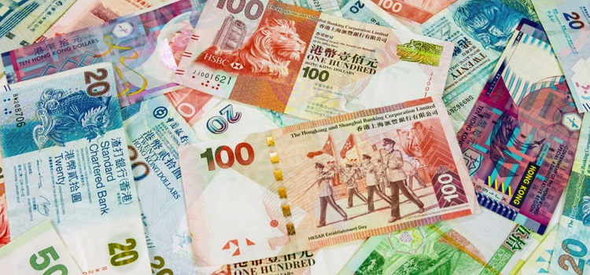
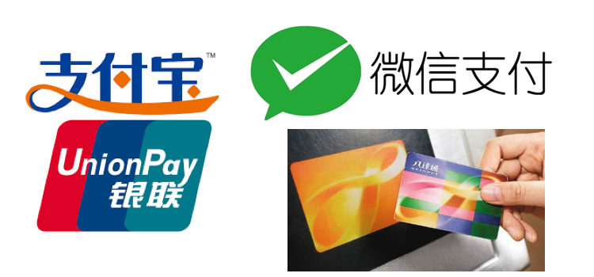

货币
港元为香港的法定流通货币，此币可分为纸币及硬币两种，纸币面额由10元到1,000元，而硬币面值则由1角至10元。港币跟人民币是浮动汇率，汇率一般约：1人民币=1.20港元，若您想了解最新汇率，推荐使用无忧行汇率工具查看当地最新准确汇率。由于近年曾出现1,000元假钞事件，很多店铺都不愿接受以1,000元付款，尤其是小店，所以建议在付款前可先问一下店员可否使用1,000元。

如您觉得携带大量现金很麻烦的话，使用电子货币是一个不错的选择。除使用银联、VISA和万事达信用卡外，首选是购买一张电子储值卡 -「八达通」卡，只要在任何港铁站购买此卡并于便利商店或港铁站把卡充值，您就可以在公共交通工具上、便利商店、超级市场、和自动贩卖机等使用，十分便捷！此外，香港现时不少商店都接受微信支付或支付宝付款，付款前不妨了解可行的交易方式。

详细请看网站：
「八達通」官网：
http://www.octopus.com.hk/home/tc/index.html
支付寶官网：https://www.alipay.hk/
气候
香港属于亚热带气候，四季分明，由3-5月是香港的春天，平均温度约摄氏18-26度，天气潮湿有雾，接着6-9月为夏天，气温可达摄氏35度，要提醒的是这是暴雨和台风的季节，若不幸碰到它们，外出时谨记带上坚固的雨伞，尽量留在室内。从10-11月就是秋天，气温跟春天相若，天气晴朗干爽，所以秋天是香港最佳的旅游时间。而最后由12-2月是香港的冬天，平均气温为摄氏10-15度，天气寒冷干燥，有时候局部地区会出现结霜现象。

详细请看香港天文台官网：
http://gb.weather.gov.hk/contentc.htm
通行证
内地居民一般以「团队旅游」及「个人旅游」形式来港观光旅游。无论是那一种方式赴港，均需到中国内地有关省市公安机关签发《往来港澳通行证》和旅游签注。目前内地一共有49个城市（包括北京、上海、广东省全省等）开放「个人旅游」办理，除《往来港澳通行证》外，居民需办理个人旅游签注（G），其他城市居民则需参加旅行团前办理团队旅游签注（L）。
旅游签注一共分为五种，分别为三个月一次、两次签注、一年一次、二次签注及一年多次签注（只限深圳户籍居民），旅客每次在香港有7天停留时间。
如您希望了解更多办理手续，请参阅您所属省市公安机关网站或亲临查询，取得详细资料。
广东省公安厅出入境政务服务网：
http://crj.gdga.gov.cn/index.htm
北京市公安局出入境管理办事大厅：
http://www.bjgaj.gov.cn/jjcrj/index.jsp
上海市公安局出入境管理局电子政务平台：
http://crj.police.sh.cn/default.jsp
通讯服务
香港通讯网络完善，Wi-Fi热点遍布全港，包括机场、港铁站、部分购物中心、餐厅及便利店等等。但仍有部分公共场所不提供Wi-Fi服务，经常上网的您，经无忧行APP购买香港流量包是最合适的，APP里有多个优惠套餐可供选择，如1天、2天、3天无限量包等等，让您可以随时随地用手机跟本地、内地及海外的亲朋好友通讯，交流最新的资讯。
您亦可开通手机的国际漫游服务。拨打及接听本地和内地语音资费为每分钟0.99人民币，发短信回内地资费为每条0.39人民币，发短信至其它国家和地区资费为每条1.29人民币，接收短信免费。
语言
香港政府一向提倡「两文三语」政策，「两文」是指中文和英文，这是香港的法定语文，而「三语」分别是粤语、英语和普通话，但现时只有粤语及英语是香港的通用语言。自从香港回归后，两地经济及文化交流频繁，普通话渐趋普及，若您用普通话问路的话，相信香港市民也可以帮助您。可是基于中国推行简化字时，香港还是英国的殖民地，一直沿用繁体字，所以您在香港阅读时要花上时间。
紧急联络电话
12308是外交部全球领事保护与服务应急呼叫中心为中国公民提供24小时领事保护与服务的领事保护热线。中国公民无论身处世界哪个角落，遭遇紧急情况时均可第一时间通过拨打呼叫中心热线，向祖国寻求领事保护与协助。在无忧行App中，提供了完全免费的12308拨打功能，只要手机可以上网，就可立即使用，不限时间。
出外旅游难免发生意外，为谨慎起见，建议您出发前记下以下紧急联络电话，万一发生事故，可立刻向服务机关求助。
若您遇上紧急情况，可致电：
| 紧急求助电话 （火警、报警、急救） |
999 |
| 警局热线（查询警署位置、报失护照或旅游证件） | +852 2527 7177 |
若您想投诉或举报任何不公平/违法事件，可致电：
| 香港旅游业议会热线 | +852 2807 0707 |
| 消费者委员会热线 | +852 2929 2222 |
| 香港旅游发展局旅游热线 | +852 2508 1234 |
| 香港海关热线 | +852 2815 7711 |
| 入境事务处热线 | +852 2824 6111 |
| 卫生署热线 | +852 2961 8989 |
若您想作相关查询，可致电：
| 香港国际机场热线 | +852 2181 8888 |
| 香港邮政热线 | +852 2921 2222 |
| 香港旅游发展局旅游热线 | +852 2508 1234 |
若您想作任何固网电话查询，可致电：
| 统一电话查询服务热线 | +852 1083 （粤语） |
| +852 1088 （国语） |